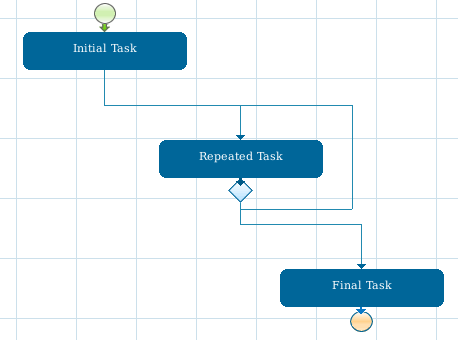
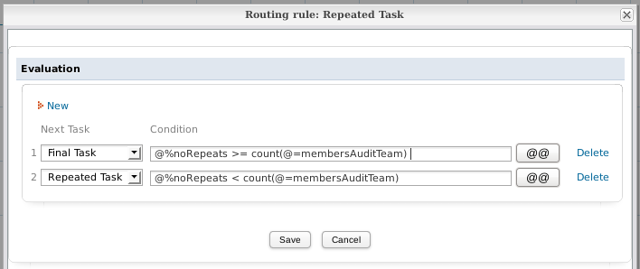
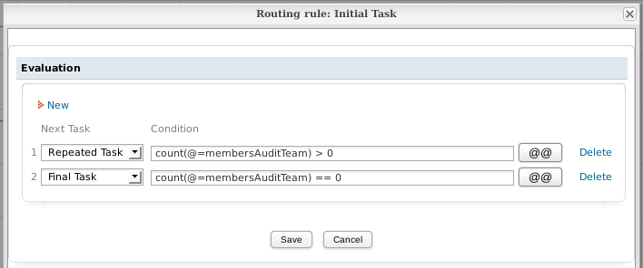
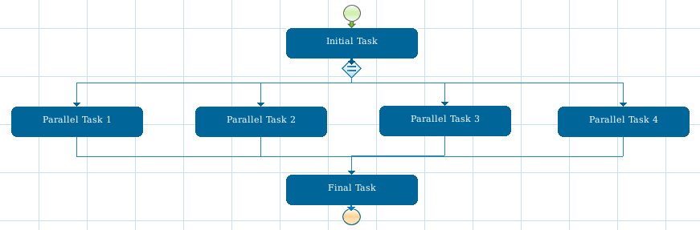
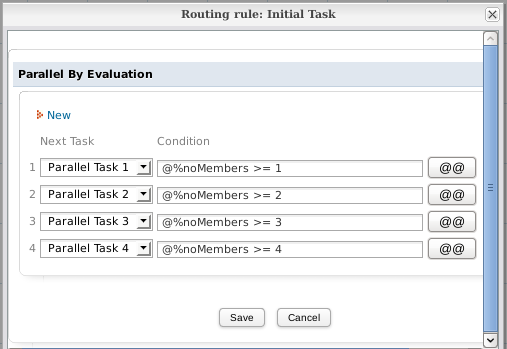

- Overview
- Aborting New Cases Under Certain Circumstances
- Workaround for Global Variables
- Routing (Derivating) all Parallel Tasks in a Case
- Routing Parallel Tasks after Completing a Fixed Number
- Displaying a List of Cases in a Grid
- Skipping the Next Task in a Case
- Uncancelling a Case
- Executing a Task a Variable Number of Times
- Sending Grid Information via Email
- Create new case and change its status
Overview
Triggers provide a great deal of customization and flexibility to process design. These examples provide some ideas for more advanced uses of triggers.
Aborting New Cases Under Certain Circumstances
A trigger could be written to abort an existing case under certain circumstances. For instance, suppose there is a process where users should not open a new case if there is already an existing case which hasn't yet been completed (or canceled). The following trigger code could be inserted before the first step in the initial task to lookup whether there is already a case assigned to the current logged-in user whose APP_DELEGATION.DEL_THREAD_STATUS field is equal to 'OPEN', meaning that the task hasn't hasn't been completed (or canceled) yet. If there is, then the new case which was just started will be deleted and a message will be displayed in red to the user to first complete the existing case.
$user = @@USER_LOGGED;
$process = @@PROCESS;
//Query to find any uncompleted steps assigned to logged-in user
$query = "SELECT * FROM APP_DELEGATION WHERE PRO_UID='$process' AND
USR_UID='$user' AND DEL_THREAD_STATUS='OPEN'";
$res = executeQuery($query);
//if any open tasks are are found, assigned to user:
if (is_array($res) and count($res) >= 1)
{
$c = new Cases();
$c->removeCase(@@APPLICATION); //delete the existing case
//Look up info on the existing case:
$caseId = $res[1]['APP_UID'];
$resExisting = executeQuery("SELECT * FROM APPLICATION WHERE APP_UID='$caseId'");
$caseNo = $resExisting[1]['APP_NUMBER'];
$caseId = $resExisting[1]['APP_UID'];
$caseIdx = $caseId = $resExisting[1]['APP_INDEX'];
//Finally display message to user to first complete other case and redirect to the existing case
$g = new G();
$g->SendMessageText("Case Aborted. Please complete or cancel this Case #$caseNo before starting a new case", 'WARNING');
G::header("Location: cases_Open?APP_UID=$caseId&DEL_INDEX=$caseIdx")
die(); //abort trigger to prevent any errors
}
Workaround for Global Variables
ProcessMaker does not have global variables, which can be used for all cases and processes. The best workaround for a global variable is to store values in a PM Table or an external database, and then look it up when needed with executeQuery(). When needing to permanently change the value of the variable, write to the database.
For example, a PM Table named "GLOBALS" could be created with the fields "VARIABLE" and "VALUE". To store the names of the managers of a company, the following data could be stored in the "GLOBALS" PM Table:
Then use the following query to look up the "CEO" global variable:
To set the "CEO" global variable to "Mary Marvin":
Note: In ProcessMaker 2.0+, PM Tables have "PMT_" prepended to their names in the wf_<WORKSPACE> database.
Global Counters for Cases
PM Tables can be used to implement global counters that can work across all cases. For example, if needing to keep a counter of the number of cases for each department in an organization, create a PM Table named "COUNTERS" with the fields "VARIABLE" and "VALUE" with the following contents:
------------------------ -------
SALES_COUNTER 0
FINANCE_COUNTER 0
HUMAN_RESOURCES_COUNTER 0
Then, add a trigger to every case to increment the counter and display the number in the counter in a DynaForm when beginning a new case. For example a new case in the Finance department would execute the following trigger before the first step in the first task:
$result = executeQuery("SELECT VALUE FROM PMT_COUNTERS WHERE VARIABLE='FINANCE_COUNTER'") or
die("Error accessing the COUNTERS PM Table!");
if (is_array($result) and count($result) > 0) {
@%counter = $result[1]['VALUE'] + 1;
//write the new counter value to the database:
executeQuery("UPDATE PMT_COUNTERS SET VALUE=" . @%counter . " WHERE VARIABLE='FINANCE_COUNTER'");
}
else
@%counter = 1;
Then, add a field named "counter" to a subsequent DynaForm, so the value of the counter can be displayed to the user.
Note: In this case, the VALUE field is an INTEGER type, so its value doesn't need to be enclosed in single quotation marks like a CHAR or VARCHAR field.
Routing (Derivating) all Parallel Tasks in a Case
A trigger can be used to automatically route (derivate) all the the parallel tasks in a case.
For example, a purchase request is sent to 3 managers as 3 parallel tasks. Once one manager makes a decision to approve or disapprove the purchase request, the case will automatically route on for all the other managers, so the first manager to make a decision will decide for the others and the case will be removed from the inbox of the other managers.
if (isset(@@ManagerDecision)) {
$caseId= @@APPLICATION;
$userLogged = @@USER_LOGGED;
$index = @%INDEX;
//Select all the other parallel tasks for the current case that are still open
$query = "SELECT DEL_INDEX, U.USR_USERNAME FROM APP_DELEGATION AD, USERS U ".
"WHERE AD.APP_UID = '$case_id' AND AD.DEL_THREAD_STATUS='OPEN' AND " .
"AD.USR_UID = U.USR_UID AND AD.DEL_INDEX <> $index";
$threads = executeQuery($query);
if (is_array($threads) and count($threads) > 0) {
foreach ($threads as $thread) {
//Login as the assigned users and route on their tasks
$sql = "SELECT USR_PASSWORD FROM USERS WHERE USR_USERNAME = '{$thread['USR_USERNAME']}'";
$task_user = executeQuery($sql,'rbac');
if (is_array($task_user) && count($task_user) > 0) {
$pass = 'md5:' . $task_user[1]['USR_PASSWORD'];
WSLogin($thread['USR_USERNAME'], $pass);
WSDerivateCase($case_id, $thread['DEL_INDEX']);
}
}
}
}
Routing Parallel Tasks after Completing a Fixed Number
A process to approve expenses needs at least 3 out of 5 managers to review the expense before a decision can be made. The process has 5 parallel tasks which are each assigned to one of the managers. The following trigger is fired before assignment of all the parallel tasks (which means that it will be fired after all the steps have been completed). The trigger code checks to see whether at least two of the other parallel tasks have already been completed. Including the current task, that would mean that three tasks have been completed, so the rest of the parallel tasks will automatically be routed (derivated). The code looks up the assigned users for those tasks and logins as those users and calls the routeCase() web service for each task.
First go to ADMIN > Web Services Test and use the taskList() web service to look up the unique IDs for all the parallel tasks, which will be used in the following trigger code:
$taskId = @@TASK;
$countClosedTasks = 0;
//list of the IDs for the 5 parallel tasks:
$parallelTasks = "'1129023074e8e00f01f0642011534782', '7837951304e8dd53d613964054647943', " .
"'3001879264e8dbd30a46809038822000', '2506791564e8de6ea87bfc9026376538', '7564234874e8de6ec4fbe66022890094'";
$tasks = executeQuery("SELECT * FROM APP_DELEGATION WHERE APP_UID='$caseId' AND TAS_UID in ($parallelTasks) AND
TAS_UID<>'$taskId'");
foreach($tasks as $task) {
if (task['DEL_THREAD_STATUS'] == 'CLOSED')
$countClosedTasks++;
}
//If at least 2 of the parallel tasks have been completed, then route on the rest
if ($countClosedTasks >= 2) {
$client = new SoapClient('http://myserver.com/sysworkflow/en/green/services/wsdl2');
foreach ($tasks as $task) {
//if the task is open, then login as its user and route it on
if ($task['DEL_THREAD_STATUS'] == 'OPEN') {
$result = executeQuery("SELECT USR_USERNAME, USR_PASSWORD FROM USERS WHERE USR_UID='{$task['USR_UID']}'", 'rbac');
$params = array(array(
'userid' => $result[1]['USR_USERNAME'],
'password' => 'md5:' . $result[1]['USR_PASSWORD']
));
$result = $client->__SoapCall('login', $params);
if ($result->status_code == 0)
$sessionId = $result->message;
else
die("Unable to connect to ProcessMaker.\nError Number: {$result->status_code}\n" .
"Error Message: {$result->message}\n");
$params = array(array(
'sessionId' => $sessionId,
'caseId' => $caseId,
'delIndex' => $task['DEL_INDEX']
));
$result = $client->__SoapCall('routeCase', $params);
if ($result->status_code != 0)
die("Error deriving case: {$result->message}\n");
}
}
}
Displaying a List of Cases in a Grid
A grid with information and links to cases can be displayed in a DynaForm. For example, to display a list of cases for the currently logged in user in a grid, first create a grid named "casesGrid" with the fields "caseNumber" (textbox), "processName" (textbox), "taskName" (textbox), "dueDate"(date), "linkToCase" (link), "urlForCase" (hidden), and "labelForCase" (hidden). Then, fire a trigger before the DynaForm to populate the grid, with code like this:
$userId = @@USER_LOGGED;
$q = "SELECT APP_UID, DEL_INDEX FROM APP_DELEGATION WHERE USR_UID='$userId' and DEL_THREAD_STATUS='OPEN'";
$cases = executeQuery($q);
if (is_array($cases) and count($cases) > 0) {
for ($i = 1; $i <= count($cases); $i++) {
$caseId = $cases[$i]['APP_UID'];
$caseIndex = $cases[$i]['DEL_INDEX'];
$oCase = new Cases();
$aCaseInfo = $oCase->loadCase($caseId, $caseIndex);
//look up the Task Name and Process Name:
$lang = @@SYS_LANG;
$result = executeQuery("SELECT CON_VALUE FROM CONTENT WHERE CON_ID = '{$aCaseInfo['PRO_UID']}' AND CON_CATEGORY='PRO_TITLE' AND CON_LANG='$lang'");
$processName = $result[1]['CON_VALUE'];
$result = executeQuery("SELECT CON_VALUE FROM CONTENT WHERE CON_ID = '{$aCaseInfo['TAS_UID']}' AND
CON_CATEGORY='TAS_TITLE' AND CON_LANG='$lang'");
$taskName = $result[1]['CON_VALUE'];
@=casesGrid[$i] = array(
"caseNumber" => $aCaseInfo['APP_NUMBER'],
"processName" => $processName ,
"taskName" => $taskName,
"dueDate" => $aCaseInfo['DEL_TASK_DUE_DATE'],
"linkToCase" => '',
"urlForCase" => "../cases/cases_Open?APP_UID=$caseId&DEL_INDEX=$caseIndex",
"labelForCase" => $aCaseInfo['APP_TITLE']
);
}
@=casesGrid = orderGrid(@=casesGrid, 'dueDate', 'DESC');
}
Then, add the following JavaScript code to the DynaForm to set the links in the casesGrid:
for (var i = 1; i <= totalRows; i++) {
getGridField("casesGrid", i, "linkToCase").href = getGridValueById("casesGrid", i, "urlForCase");
getGridField("casesGrid", i, "linkToCase").innerHTML = getGridValueById("casesGrid", i, "labelForCase");
}
Skipping the Next Task in a Case
If inside the current task, the rest of the steps in that task can be skipped by calling the PMFDerivateCase() function in a trigger. However, the PMFDerivateCase() function can't be called for tasks to which the current logged-in user is not assigned. Moreover, PMFDerivateCase() can't be called for tasks which don't yet have a record in the wf_<WORKSPACE>.APP_DELEGATION table and whose DEL_THREAD_STATUS field does not equal "OPEN". For these reasons, PMFDerivateCase() cannot be used to skip the next task in a case.
Instead, to skip the next task, create a trigger which fires after derivation/routing of the previous task. After derivation, a record has already been created in the wf_<WORKSPACE>.APP_DELEGATION table, so the assigned user and the delegation index for the next task can be looked up with executeQuery(). Also look up the MD5 hash for that user's password in the RBAC database. Then, login as that next assigned user with the login() web service and then call routeCase() to route through the next task.
For example:
//lookup the user assigned to the next task in the case
$query = "SELECT AD.DEL_INDEX, U.USR_USERNAME
FROM APP_DELEGATION AD, USERS U
WHERE AD.APP_UID='$caseId' AND
AD.DEL_INDEX=(SELECT MAX(DEL_INDEX) FROM APP_DELEGATION WHERE APP_UID='$caseId')
AND AD.USR_UID=U.USR_UID";
$result = executeQuery($query);
$nextUser = $result[1]['USR_USERNAME'];
$nextIndex = $result[1]['DEL_INDEX'];
//lookup the md5 hash for the password
$result = executeQuery("SELECT USR_PASSWORD FROM USERS WHERE USR_USERNAME='$nextUser'", 'rbac');
$nextPass = 'md5:' . $result[1]['USR_PASSWORD'];
$client = new SoapClient('http://192.168.1.76:2036/sysworkflow/en/classic/services/wsdl2');
$params = array(array('userid' => $nextUser, 'password' => $nextPass));
$result = $client->__SoapCall('login', $params);
if ($result->status_code == 0)
$sessionId = $result->message;
else
die("Unable to connect to ProcessMaker.\nError Message: {$result->message}");
$params = array(array(
'sessionId'=> $sessionId,
'caseId' => @@APPLICATION,
'delIndex' => $nextIndex
));
$result = $client->__SoapCall('routeCase', $params);
if ($result->status_code != 0)
die("Error routing case: {$result->message}\n");
If needing to execute this code in the middle of the previous task, first call PMFDerivateCase(), then execute the rest of the above code. At the end, call G::header() to redirect to the cases list and then call die(), to stop the previous task from trying to continue onto the next step.
Note: This code will have problems if the next task is a parallel task, because its index number might not be the maximum index number. In that case, search for a particular task ID in the APP_DELEGATION table. Task IDs can be found with the taskList() function under ADMIN > Settings > Web Services Test.
FROM APP_DELEGATION AD, USERS U
WHERE AD.APP_UID='$caseId' AND AD.TAS_UID='XXXXXXXXXXXXXXXXXXXXXXX' AND
AD.DEL_INDEX=(SELECT MAX(DEL_INDEX) FROM APP_DELEGATION WHERE APP_UID='$caseId' AND AD.TAS_UID='XXXXXXXXXXXXXXXXXXXXXXX')
AND AD.USR_UID=U.USR_UID";
Uncancelling a Case
After a case has been canceled, it is not possible to uncancel the case from the ProcessMaker interface. However, it is possible to uncancel a case inside the wf_<WORKSPACE> database and return its status to "To Do". To uncancel a case, change the value of the APPLICATION.APP_STATUS field from "CANCELLED" to "TO_DO" (or "DRAFT") and change the APP_DELEGATION.DEL_THREAD_STATUS field from "CLOSED" to "OPEN" and set the APP_DELEGATION.DEL_FINISH_DATE field to NULL for the last task(s) in the case. Also, change the APP_DELEGATION.APP_THREAD_STATUS field from "CLOSED" to "OPEN".
For example, to uncancel all the cases for a user selected in dropdown box named "userId" of a previous DynaForm:
$query = "SELECT AD.APP_UID, AD.DEL_THREAD FROM APP_DELEGATION AD, APPLICATION A
WHERE AD.USR_UID='$userId' AND AD.APP_UID=A.APP_UID AND A.APP_STATUS='CANCELLED'";
$cases = executeQuery($query) or die("Error: Unable to query database.\n");
foreach($cases as $case) {
$caseId = $cases['APP_UID'];
$thread = $cases['DEL_THREAD'];
//find all the tasks which have the same thread number, so they can all be opened
$query = "SELECT * FROM APP_DELEGATION WHERE APP_UID='$caseId' AND DEL_THREAD=$thread";
$tasksOnThread = $executeQuery($query);
foreach ($tasksOnThread as $task) {
$query = "UPDATE APP_DELEGATION SET DEL_THREAD_STATUS='OPEN', DEL_FINISH_DATE=NULL
WHERE APP_UID='$caseId' AND DEL_INDEX=" . $task['DEL_INDEX'];
if (executeQuery(query) < 1)
die("Error: Unable to update APP_DELEGATION table.\n");
}
executeQuery("UPDATE APP_THREAD SET APP_THREAD_STATUS='OPEN' WHERE APP_UID='$caseId' AND APP_THREAD_INDEX=$thread");
executeQuery("UPDATE APPLICATION SET APP_STATUS='TO_DO' WHERE APP_UID='$caseId'");
}
Note that this example code will need to be adapted to work for cases which have multiple open threads.
Executing a Task a Variable Number of Times
There are two ways to execute a task a variable number of times in a process, but both methods have their drawbacks.
Repeating a Task with a Loop-Around
Use an evaluation routing rule to create a loop-around for the same task in the process map so the task can be repeatedly executed.

In the "Initial Task", set a case variable (either with a DynaForm field or a Trigger) to determine how many times the task should be repeated. If the "Repeating Task" needs to be worked on by a different user each time it executes, then set it to use Value Based Assignment, so that a different user can be designated with each pass through the task.
For example, the "Repeating Task" needs to be executed once by every member of a group named "Audit Team" (which has a unique ID of "2509613254f466254cdcf07067330602"). Set a Trigger to fire in the "Initial Task" which will lookup the members of the "Audit Team". The Trigger creates:
- A case variable named
@%noRepeatsto keep track of the number of times the task has been repeated. - An array named
@=membersAuditTeamto hold the unique IDs of the members of the "Audit Team" group. - A case variable named
@@currentAuditorto hold the unique ID of the user who is designated to work on the "Repeating Task".
@=membersAuditTeam = array();
@@currentAuditor = '';
G::LoadClass("groups");
$g = new Groups();
$aUsers = $g->getUsersOfGroup('2509613254f466254cdcf07067330602');
for ($i = 0; $i < count($aUsers); $i++) {
@=membersAuditTeam[] = $aUsers[$i]['USR_UID'];
}
if (count(@=membersAuditTeam) > 0)
@@currentAuditor = @=membersAuditTeam[0];
Set the "Repeating Task" to use Value Based Assignment with the variable @@currentAuditor. Set the evaluation routing rule after "Repeating Task" to use these conditions:

Finally, set the following Trigger to fire with each pass through the "Repeating Task", so that @%noRepeats will be incremented and @@currentAuditor will be set to the next user in the @=membersAuditTeam array.
if (@%noRepeats < count(@=membersAuditTeam))
@@currentAuditor = @=membersAuditTeam[@%noRepeats];
If a Task May Repeat Zero Times
If the "Repeating Task" needs to have the possibility of not being executed at all (for example, there a zero members in the "Audit Team"), then an evaluation routing rule needs to be added before the "Repeating Task" to skip it.

Then, conditions can be added to the first evaluation routing rule to either go to the Repeating Task or skip to the "Final Task". For example:

The conditions in the second evaluation routing rule will be the same as in the previous example.
Drawbacks
Repeating a task with a loop-around has several drawbacks:
- The task will be executed serially, so that it can take a long time for each user to execute the task one by one.
- If the repeating task contains a DynaForm, then each new user can change the values of the DynaForm fields with each loop, so the values from the first user might get overwritten by the second user, and the values of the second user might get overwritten by the values of the third user, etc.
A Variable Number of Parallel Tasks
The other way to repeat a variable number of tasks is to create a parallel tasks which will all execute at the same time. Create as many variable tasks as the maximum number of times that the task could possibly be executed.
For example, if each parallel task needs to be executed by a member of the "Audit Team", then create as many parallel tasks as the largest number of possible members of the "Audit Team".

Set each of the parallel tasks to use Value Based Assignment. "Parallel Task 1" uses variable @@userForTask1, "Parallel Task 2" uses variable @@userForTask2, "Parallel Task 3" uses variable @@userForTask3, and "Parallel Task 4" uses variable @@userForTask4.
Then, set a Trigger to fire in the "Initial Task" which determines the number of parallel tasks to execute and which users will be designated to work on each parallel task.
For example, the following Trigger fired during the "Initial Task" looks up the members of the "Audit Team" (which has a unique ID of "2509613254f466254cdcf07067330602") and assigns each member to a different parallel task:
G::LoadClass("groups");
$g = new Groups();
$aUsers = $g->getUsersOfGroup('2509613254f466254cdcf07067330602');
@%noMembers = count($aUsers);
if (@%noMembers >= 1)
@@userForTask1 = $aUsers[0]['USR_UID'];
if (@%noMembers >= 2)
@@userForTask2 = $aUsers[1]['USR_UID'];
if (@%noMembers >= 3)
@@userForTask3 = $aUsers[2]['USR_UID'];
if (@%noMembers >= 4)
@@userForTask4 = $aUsers[3]['USR_UID'];
Set the conditions in the parallel by evaluation routing rule so that only as many parallel tasks are executed as the number of members in the "Audit Team":

Finally, set the steps for each of the parallel tasks. If needing each parallel task to execute the same steps, then keep the following caveats in mind:
- For DynaForm steps, create a separate DynaForm for each of the parallel tasks. If the same DynaForm is used in all the parallel tasks, then every user can overwrite the data entered by the other users.
To create separate DynaForms for each parallel task, use the Save As option to create copies. Then go through the copies and rename all the DynaForm fields so they have different names.
For example, if the original DynaForm is named "Audit Form" and it has the fields "accountName", "lastAudit" and "auditResult", then create:
- Audit Form 1 with the fields: "accountName1", "lastAudit1" and "auditResult1"
- Audit Form 2 with the fields: "accountName2", "lastAudit2" and "auditResult2"
- Audit Form 3 with the fields: "accountName3", "lastAudit3" and "auditResult3"
- Audit Form 4 with the fields: "accountName4", "lastAudit4" and "auditResult4"
In this way, each member of the "Audit Team" can fill out a separate form and won't see the data from the other auditors.
- For Input Document steps, the same Input Document can be used for all the parallel tasks. Each auditor can add additional files to the existing Input Document. However, if none of the auditors should be able to see the Input Document files from the other auditors, then create a separate Input Document for each parallel task.
- For Output Document steps, the same Output Document can be used for all the parallel tasks as long as versioning is enabled, so each user doesn't overwrite the Output Documents of the other users.
Sending Grid Information via Email
Available Version: Works on version 2.0.45 or previous.
If the information of a Grid is required to be sent via email follow the steps below:
1. Let's say that we need to send by email the information of a list of users adding in a grid, the name of the grid is GridName and field names are FirstName and LastName respectively, so create a trigger with the following HTML code on which the structure of the grid will be created:
$Grid.= '<tr>';
$Grid.= '<td style="background-color:#DEDEDE;">First Name</td>';
$Grid.= '<td style="background-color:#DEDEDE;">Last Name </td>';
$Grid.= '</tr>';
foreach (@=Grid as $row) {
$Grid.= '<tr>';
$Grid.= '<td>' . $row['FirstName'] . '</td>';
$Grid.= '<td>' . $row['LastName'] . '</td>';
$Grid.= '</tr>';
}
$Grid.= '</table>';
It is necessary to create a table structure with a $Grid variable, this variable will be defined to store all the HTML structure, on each line $Grid variable will be concatenated with a previous value to construct the table. On the first part the header of the grid is defined, also cases variables can be defined. As the example above some styles can be used.
On the second part, it is necessary to add a foreach sentence, since it is not possible to know how many rows will be created on the grid, so foreach will allow to go through each line of the grid to create it on the template.
2. Once the structure of the Grid is created, PMFSendMessage function must be created to define the necessary parameters to send the email:
'Grid Example','template.html',array('Grid'=>$Grid));
Since $Grid is an array it must be send on the last parameter of the function:
Grid will be the name of the variable which will be defined inside template.html, it means that this variable will contain all the grid structure stored at $Grid.
3. Finally create an HTML template named template.html with the following line:
@#Grid
Upload it using the Process Files Manager. Assign the trigger After Derivation or After Dynaform. Don't forget to configure email notifications to have mails sent successfully.
Create new case and change its status
When a new case is created, its status is automatically set to "DRAFT", so it doesn't appear in the list of cases under Home > Inbox. The Cases::updateCase() method can be used to change the status of the case from "DRAFT" to "TO_DO", so it will appear in the user's Inbox.The following example creates a new case using the PMFNewCase() function and then changes its status to "TO_DO":
$processId = '43232262556d0e93847dbd2083513445'; //set to the process' unique ID
//set variables from the current case to send to the new case:
$aData = array(
'clientName' => @@clientName,
'invoiceAmount' => @@InvoiceAmount
);
$newCaseId = PMFNewCase($processId, @@USER_LOGGED, $taskId, $aData);
if ($newCaseId) {
//change status:
$c = new Cases();
$aCase = $c->loadCase($newCaseId);
$aCase['APP_STATUS'] = 'TO_DO';
$c->updateCase($newCaseId, $aCase);
}
Note that the above method should only be used if setting the status of a case to "TO_DO" or "DRAFT". if needing to change the case's status to "CANCELLED", "DELETED" or "PAUSED", then then the corresponding PMFCancelCase(), cases::deleteCase() or PMFPauseCase() functions should be used. To change the status to "COMPLETED", the PMFDerivateCase() function can be used to complete a final task in the process.